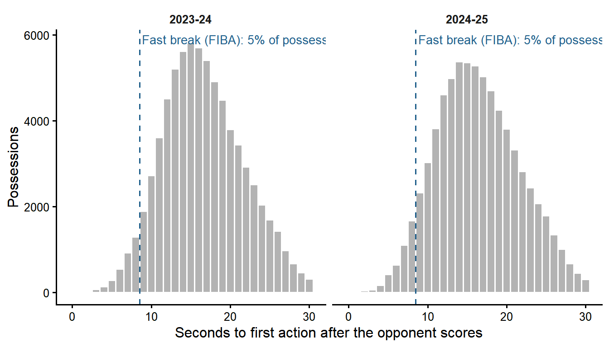
Pushing after the opponent scores barely matters, once you take the score out
NBA 2023-24 and 2024-25 · Bayesian hierarchical model in Stan · Santiago Costas, with Claude Opus 5.5 (high) as assistant for code, layout and writing style
Independent analysis using public data, presented as an example case; not affiliated with the NBA or any of its teams. Reasoning behind every choice: decision log. Full model: formulation.
For the staff
- Pushing the ball after the opponent scores is a style choice that neither costs nor wins much. In close games, playing a second faster than your usual pace goes with slightly better possessions, but the gain is small and uncertain.
- A naive look says the opposite (pushing hurts). That is likely, at least in part, the score talking: teams that are behind speed up, so the bad nights are also the fast ones.
- What separates teams is what they do with these possessions, not how fast they start them. Every live-ball turnover hands the opponent a possession worth about 0.2 points more than a made basket does.
The question
After the opponent scores, a team can inbound and attack before the defense is set, or walk the ball up and run its half-court offense. Does pushing pay, once the cost of turnovers is counted, and does it pay more for some teams than for others?
Every possession after an opponent’s made field goal is measured by the seconds of game clock until its first action (shot, shooting foul or turnover; the inbound is included, because inbounding quickly is part of pushing) and by its net points: points scored minus the league-average value of the possession it hands to the opponent. A steal hands the opponent 1.33 points per possession; a made basket, 1.13.
What the data show
Strict fast breaks are rare after a made basket
Only 5% of these possessions are fast breaks in the FIBA sense. Pushing after a make usually ends in early offense, so intention is measured as a continuous pace, not as a count of fast breaks.
Teams have a pace identity after makes
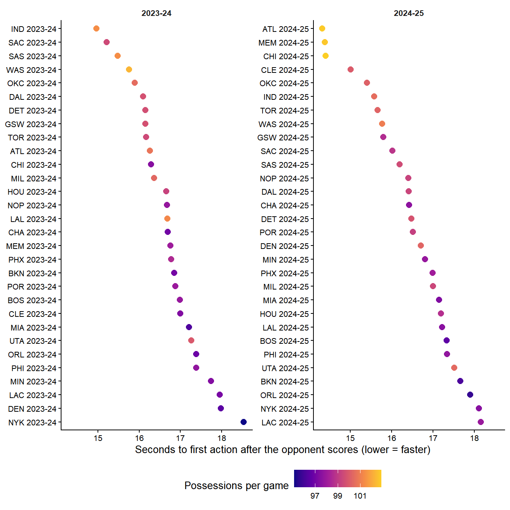
Usual paces span about four seconds across team-seasons, from about 14.3 to 18.5 seconds. Teams that push after makes tend to play fast overall too, but not always.
Teams stick to their pace from game to game
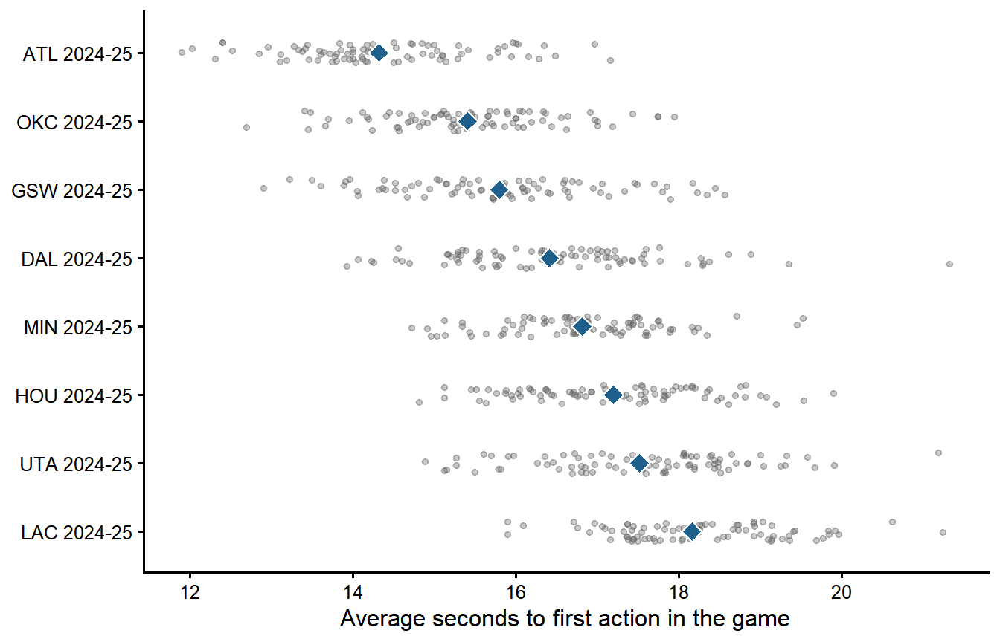
Part of the game-to-game scatter is noise from averaging about 30 possessions. Once the model separates it, a team’s true pace moves about 0.70 s from game to game, while usual paces differ across teams by about 0.95 s: roughly 64% of the variation in a game’s pace is who the team is.
The score moves the pace
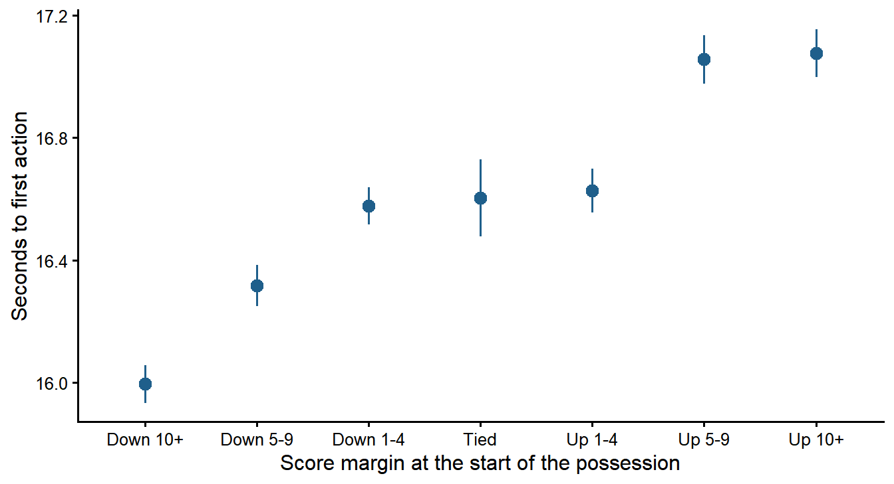
Teams behind push to catch up and teams ahead slow down. So a naive comparison mixes the choice to push with the score. The model is therefore fitted three times: on all possessions, on close games (quarters 1-3, within 5 points) and on first quarters, where the game starts tied.
Does pushing pay?
The model compares each team with itself: in games where it plays faster than its own usual pace after makes, are those possessions better or worse? That is the return, in net points per 100 possessions per second faster.
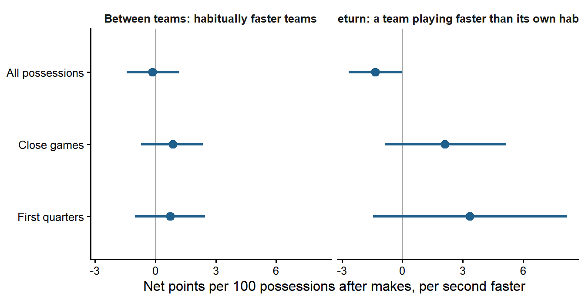
| Analysis | Possessions | Mean return (90% interval) | P(return > 0) |
|---|---|---|---|
| All possessions | every possession after an opponent’s made field goal | -1.36 (-2.67 to -0.02) | 0.05 |
| Close games | quarters 1-3, score within 5 points | 2.10 (-0.87 to 5.16) | 0.88 |
| First quarters | first quarter only | 3.33 (-1.46 to 8.16) | 0.88 |
With all possessions, the return is slightly negative. In close games and first quarters, where the score has little say, the sign flips to slightly positive, with intervals that still include zero. Pushing does not hurt when the game is even; it may help a little.
Is it different for some teams?
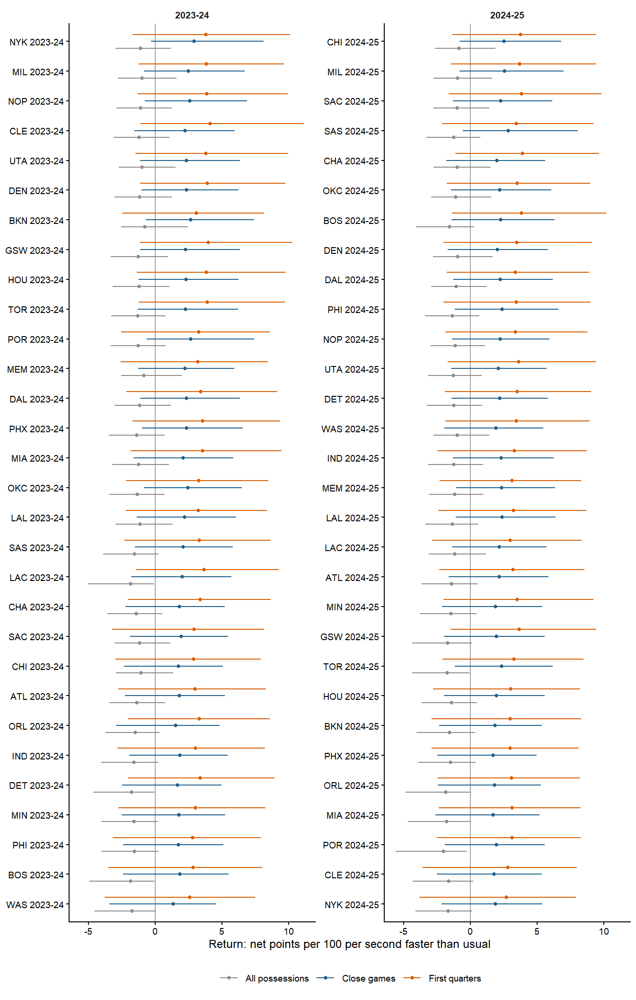
No team-season’s return can be told apart from the league value: estimates are pulled towards a common value and their intervals overlap. This is not proof that returns are identical; the data cannot say how much they really vary (in close games the spread across teams, sigma_beta, has a 90% interval of 0.1 to 6.1 net points per 100 per second).
How big is it?
| Analysis | Return (per 100, per second) | Typical game-to-game change in pace (s) | Net points per game in a typical game | Wins if played 1 s faster all season (extrapolation) |
|---|---|---|---|---|
| All possessions | -1.4 | 0.70 | -0.29 | -0.9 |
| Close games | 2.1 | 0.61 | 0.16 | 0.6 |
| First quarters | 3.3 | 0.55 | 0.16 | 0.7 |
Even in close games the effect is a fraction of a point per game. The last column (posterior median, wins per point of margin averaged over the two seasons) extrapolates beyond what teams actually do, a whole second faster every game, and is shown only to give a sense of scale.
Who pushes, and how it goes
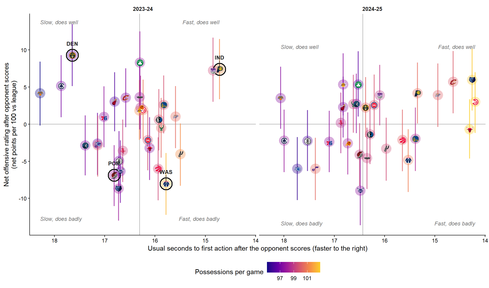
Net offensive rating after opponent scores: points scored minus the league-average value of the possession handed to the opponent, per 100 possessions after an opponent’s made field goal, relative to the league and adjusted for opponent and home court. Defense is not included.
The model names a team-season only when both its offense and its pace are clearly on one side. In close games that happens for fast and good (IND 2023-24); fast and poor (WAS 2023-24); slow and good (DEN 2023-24); slow and poor (POR 2023-24). In 2024-25 no team-season passes both conditions. Across teams, a faster usual pace goes with a slightly better offense in close games (0.87 (-0.70 to 2.36) net points per 100 per second; probability positive 0.83), weak and exposed to talent: good teams may push because they are good.
Conclusions
- The naive analysis misleads. Over all possessions, playing faster than your habit goes with slightly worse possessions. Teams behind speed up to catch up, which can produce that association on its own; the close-game and first-quarter results are consistent with this, though they also differ in which possessions they use.
- Without the score, the sign flips. In close games and first quarters, playing faster than your habit goes with a small advantage. The evidence is moderate, but it makes a large cost of pushing unlikely when the score does not force it.
- No team stands out in the return to playing faster than its own habit. No team-season’s return can be told apart from the league value; the data cannot tell how much returns really vary across teams. Teams do differ, and a lot, in how well they attack after the opponent scores (see the quadrants); they do not differ in what an extra second of speed is worth to them.
- Usual pace does not decide how well these possessions go. Fast and slow teams can both be good; what separates them is the quality of the possession, not its speed.
- The size is small in game terms: a fraction of a point per game. Home court matters more (about 2.5 net points per 100).
- For the staff: pushing after makes is neither a recipe nor a mistake. The useful question is how and with whom, which is the next layer of this project.
Limitations
- Observational data. The return compares each team with itself, which removes what is fixed for a team within a season, but not what changes from game to game: lineups, injuries, rest. A missing star can change both the pace and the result.
- The score is reduced, not removed. Close games and first quarters limit its influence; the score at each possession still reflects earlier possessions.
- Pace is measured from play-by-play. The inbound and a push that the defense stops are not observed separately; timestamps have one-second resolution.
- Two seasons, two public dumps. 2025-26 is not in the possession data used here; adding it is the first planned update.
- Garbage time follows the Cleaning the Glass margin rule without its starters condition (no lineup data).
Methods
Two submodels fitted jointly in Stan (full formulation):
- Pace: each team-game’s average seconds to first action measures, with known error, a latent true pace; true paces vary around the team-season’s usual pace.
- Outcome: net points per 100 of each team-game, normal with a spread that shrinks with the number of possessions; expected value = season average + team-season level + return x (seconds faster than usual) + opponent + home.
Team-season levels, returns and opponent effects are partially pooled. Population parameters are shared by the two seasons; everything else is season-specific.
| Analysis | Divergent transitions | Max R-hat | Min ESS (bulk) |
|---|---|---|---|
| All possessions | 0 | 1.006 | 1030 |
| Close games | 0 | 1.003 | 888 |
| First quarters | 0 | 1.006 | 680 |
Posterior predictive checks, DHARMa residuals, trace and rank plots are produced by scripts/05_model_partial_pooling.R.
If the model describes the data well, data simulated from it should look like the real data. Two checks, for the main analysis (close games) and for all possessions:
- Posterior predictive checks: the dark line is the observed distribution across team-games; the light lines are 50 datasets simulated from the posterior. They should overlap.
- DHARMa residuals: each observation is placed within its own simulated distribution. With a good model these quantiles are uniform: points on the diagonal of the QQ plot, and flat residuals against predictions and against pace.
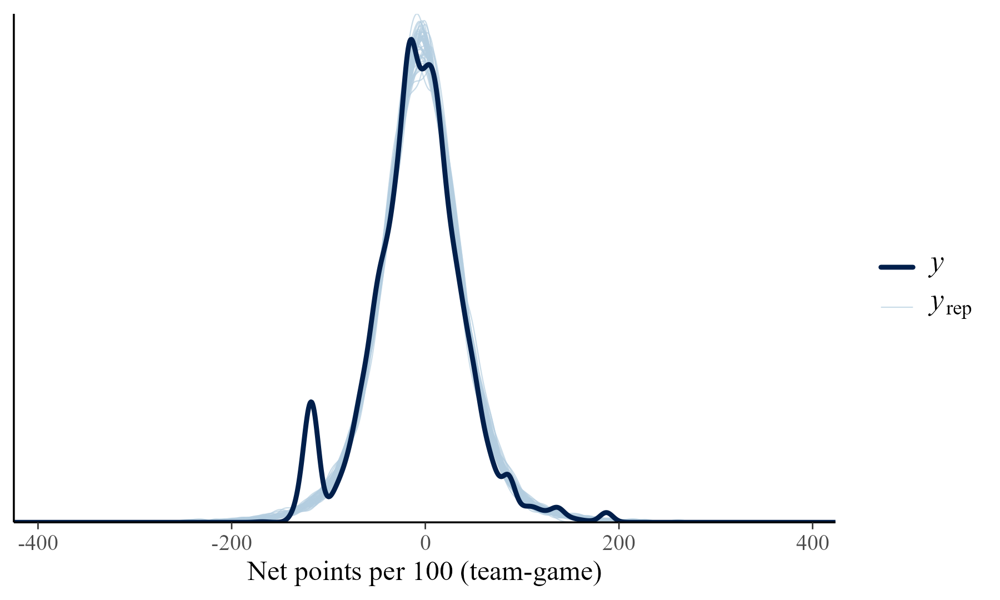
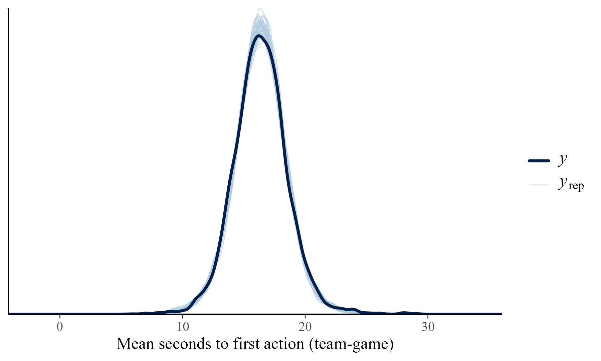
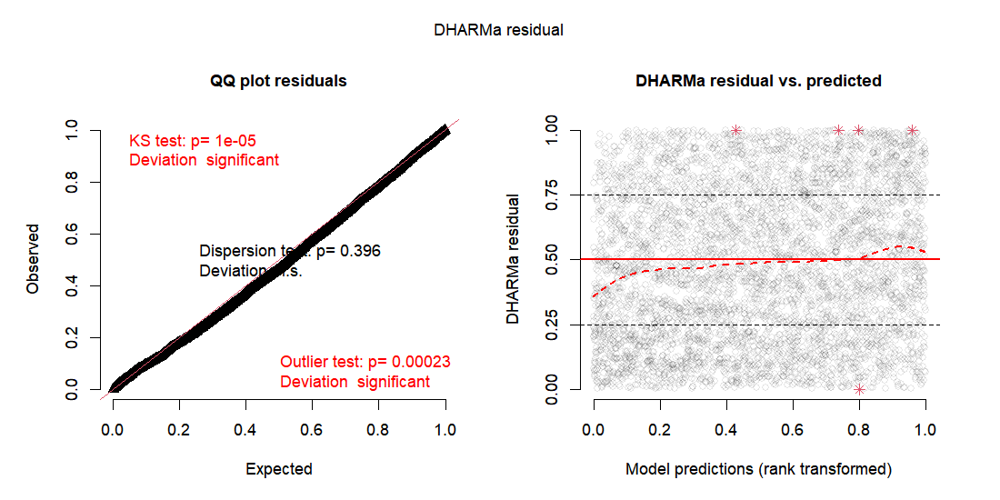
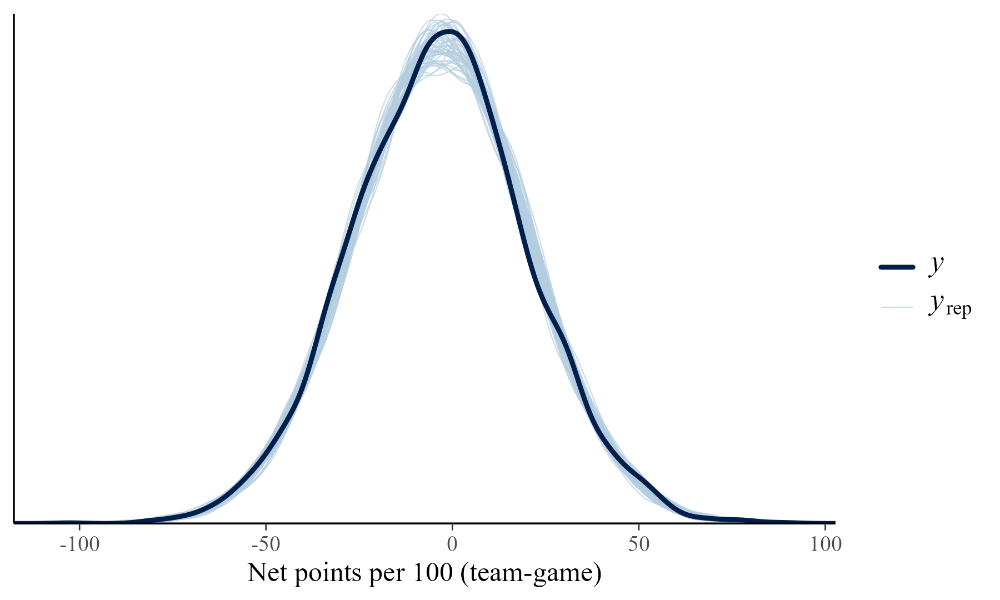
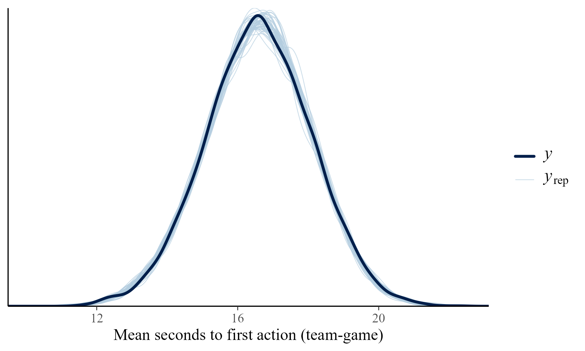
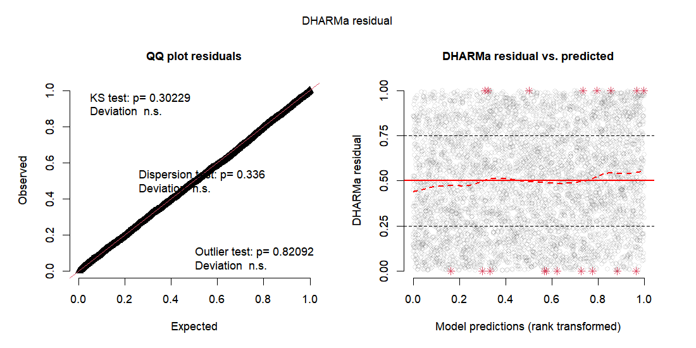
Priors are weakly informative and centred at zero for every slope, so they do not say whether pushing pays. Their scales come from the descriptive data; the only informative one is the spread of a single possession’s net points, which is observed directly. Simulating games from the priors alone gives plausible paces and scores (prior predictive check). After seeing the data, the posteriors are much narrower than the priors: the data, not the priors, drive the results.
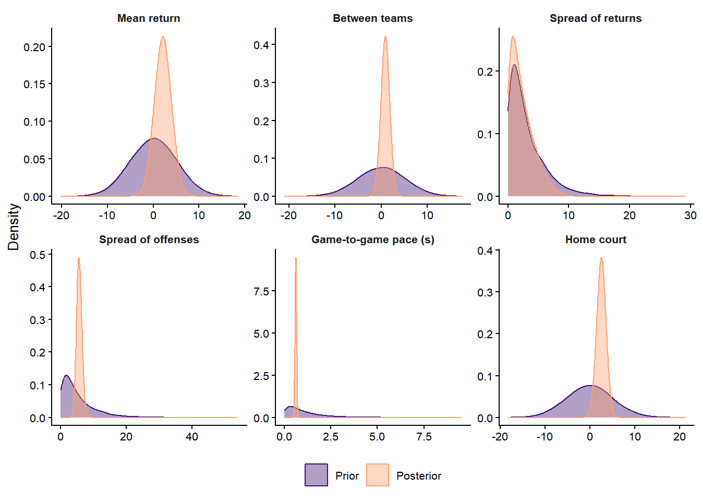
Fitting each team-season on its own (no pooling) gives returns from about -7 to +5; partial pooling pulls them towards the league value, because most of that spread is noise from 82 noisy games. Leave-one-out cross-validation prefers partial pooling.
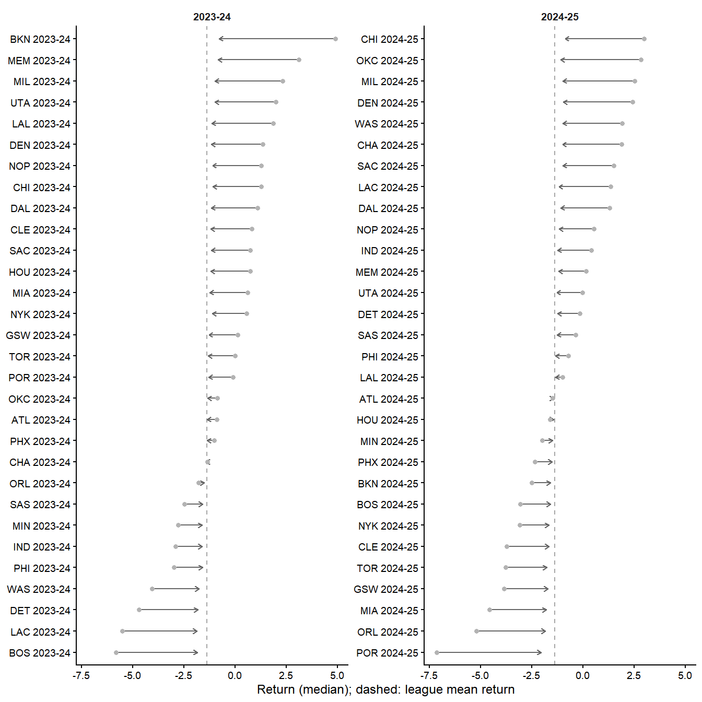
| Model | ELPD difference | SE |
|---|---|---|
| Partial pooling | 0.0 | 0.0 |
| No pooling | -11.4 | 5.4 |
Play-by-play and possession data from the public dumps in shufinskiy/nba_data, regular seasons 2023-24 and 2024-25. Validation of the sources: data notes. Every definition and exclusion, with the evidence behind it: decision log. Code, tests and the order to run the scripts: repository.